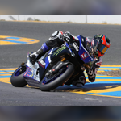
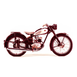
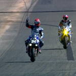
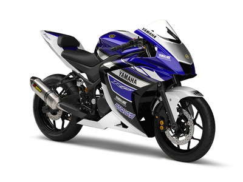

"If you're going to do something, be the best."
Genichi Kawakami.
Beginnings: 1955

The motorcycle division of Yamaha was founded in 1955, and was headed by Genichi Kawakami. Yamaha's initial product was a 125cc two-cycle, single cylinder motorcycle, the YA-1, which was a copy of the German DKW RT 125. The YA-1 was a competitive success at racing from the beginning, winning not only the 125cc class in the Mt. Fuji Ascent, but also sweeping the podium with first, second and third place in the All Japan Autobike Endurance Road Race that same year.Early success in racing set the tone for Yamaha, as competition in many varieties of motorcycle racing has been a key endeavor of the company throughout its history, often fueled by a strong rivalry with Honda and other Japanese manufacturers.
Yamaha began competing internationally in 1956 when they entered the Catalina Grand Prix, again with the YA-1, at which they placed sixth. The YA-1 was followed by the YA-2 of 1957, another 125cc two stroke, but with significantly improved frame and suspension.The YD-1 of 1957 was a 250cc two-stroke twin cylinder motorcycle, resembling the YA-2, but with a larger and more powerful motor. A performance version of this bike, the YDS-1 housed the 250cc two-stroke twin in a double downtube cradle frame and offered the first five-speed transmission in a Japanese motorcycle.This period also saw Yamaha offer its first outboard marine engine.
Success and growth

By 1963 Yamaha's dedication to both the two-stroke engine and racing paid off with their first victory in international competition, at the Belgium GP, where they won the 250cc class. Success in sales was even more impressive, and Yamaha set up the first of its international subsidiaries in this period beginning with Thailand in 1964, and the Netherlands in 1968. 1965 saw the release of a 305cc two-stroke twin, the flagship of the company's lineup. It featured a separate oil supply which directly injected oil into the gasoline prior to combustion (traditionally riders had to pre-mix oil into gasoline together before filling the gas tank on two stroke engines). In 1967 a new larger displacement model was added to the range, the 350cc two stroke twin R-1.Not until 1976 would Yamaha answer the other Japanese brands with a multi-cylinder four stroke of their own. The XS-750 (and later 850) a 750cc triple cylinder machine with shaft final drive was introduced almost seven years after Honda's breakthrough bike. Yamaha's first four-cylinder model, the XS-1100 followed in 1978, again with shaft drive.Despite being heavier and more touring oriented than its rivals it produced an impressive string of victories in endurance racing.Throughout the 1980s the motorcycle industry gradually went from building a few basic but versatile models designed to work well in many roles, to offering many more specialized machines designed to excel in particular niches. These included racing and performance street riding, touring, motocross racing, enduro and recreational off-road riding, and cruising. Yamaha branched out from the relatively small number of UJMs (Universal Japanese Motorcycle) at the start of the decade to a much larger set of offerings in several clearly defined markets at the end of the decade.In 1998 Yamaha marketed a 1000cc four cylinder road bike called the YZF 'R1', this model introduced a new style of gearbox design which shortened the overall length of the motor/gearbox case, to allow a more compact unit. This, in turn allowed the motor to be placed in the frame further forward, designed to improve handling in a short wheel-based frame.
Yamaha racing highlights

In motorcycle racing Yamaha has won 39 world championships, including 6 in MotoGP and 9 in the preceding 500 cc two-stroke class, and 1 in World Superbike. In addition Yamaha have recorded 208 victories at the Isle of Man TT and head the list of victories at the Sidecar TT with 40. Past Yamaha riders include: Giacomo Agostini, Bob Hannah, Heikki Mikkola, Kenny Roberts, Eddie Lawson, Wayne Rainey, Jeremy McGrath, Stefan Merriman, Dave Molyneux, Ian Hutchinson, Phil Read, Chad Reed, Ben Spies and Jorge Lorenzo. Their current lineup consists of nine-time world champion Valentino Rossi and Maverick Viñales.The Yamaha YZ450F won the AMA Supercross Championship two years in a row, in 2008 with Chad Reed, and 2009 James Stewart. Yamaha was the first to build a production monoshock motocross bike (1975 for 250 and 400, 1976 for 125) and one of the first to have a water-cooled motocross production bike (1977 in works bikes, 1981 in off-the-shelf bikes). Yamaha's first Motocross competition four-stroke bike, the YZ400F, won the 1998 USA outdoor national Championship with factory rider Doug Henry.Since 1962, Yamaha made production road racing Grand Prix motorcycles that any licensed road racer could purchase. In 1970, non-factory privateer teams dominated the 250 cc World Championship with Great Britain's Rodney Gould winning the title on a Yamaha TD2.Yamaha also sponsors several professional ATV riders in several areas of racing, such as cross country racing and motocross. Yamaha has had success in cross country with their YFZ450, ridden by Bill Ballance, winning 9 straight titles since 2000. Yamaha's other major rider, Traci Cecco, has ridden the YFZ450 to 7 titles, with the first in 2000. In ATV motocross, Yamaha has had success with Dustin Nelson and Pat Brown, both who race the YFZ450. Pat Brown's best season was a 3rd place title in 2007, while Nelson has had two 1st place titles in the Yamaha/ITP Quadcross, one in 2006 and the other in 2008.
Yamaha racing highlights
